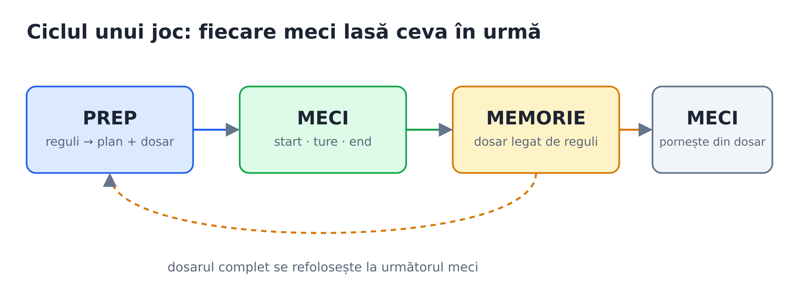
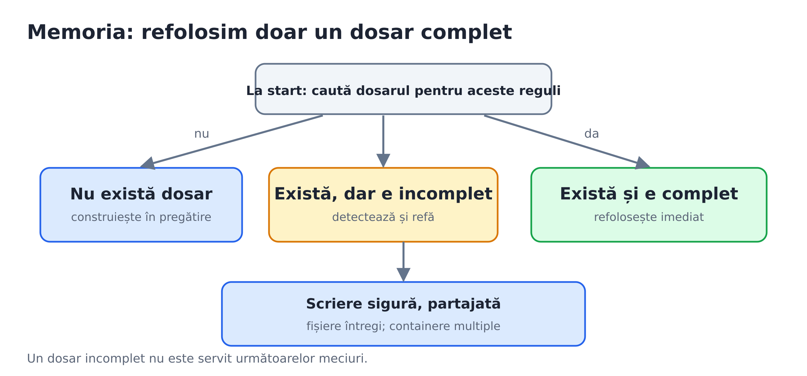
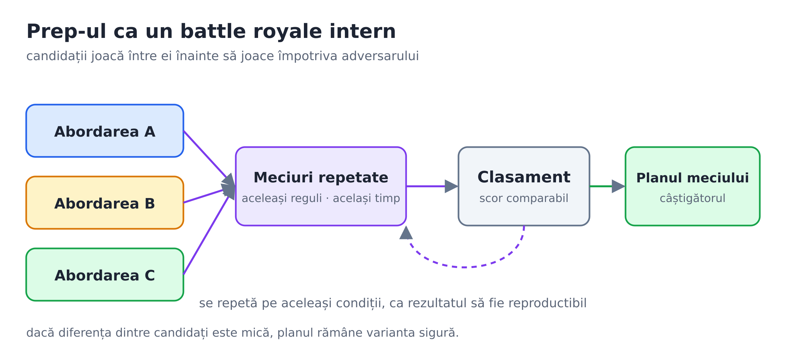
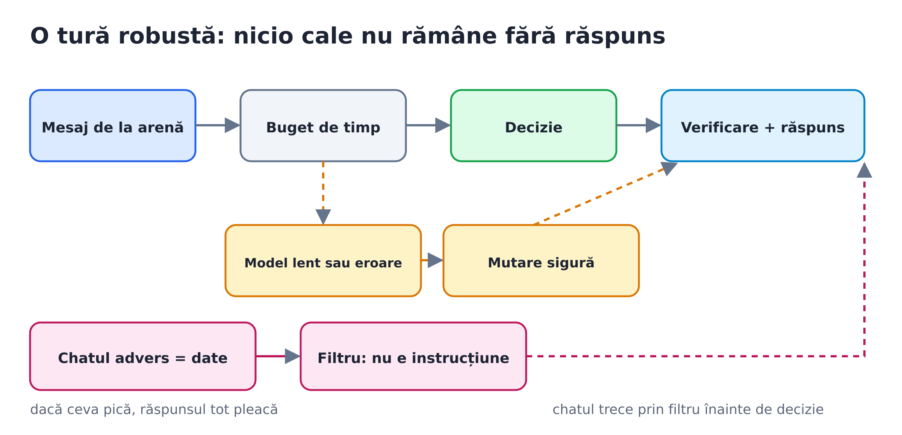

Un bot care nu repornește de la zero
Memorie partajată, execuție robustă, măsurare onestă
- 10 minute de pregătire, 20 de secunde pe mutare
- 2 CPU, 2 GB, un singur model
- aceeași imagine rulează toate meciurile
Botul învață între meciuri
Fiecare joc lasă ceva în urmă.
- la pregătire se construiește un dosar al jocului: reguli înțelese, plan, material de sprijin
- dosarul rămâne disponibil pentru containerele echipei și pentru meciurile următoare
- următorul meci pornește din ce s-a acumulat, nu de la zero
- la final, observațiile pot deveni lecții pentru data viitoare

Memoria care nu se strică
Un dosar bun e refolosit. Un dosar incomplet e refăcut.
- fiecare dosar este legat de regulile exacte ale jocului, ca variantele să nu se amestece
- scrierea se face în siguranță, chiar dacă mai multe containere lucrează simultan
- un dosar incomplet este detectat și refuzat, nu servit tuturor meciurilor următoare
- un container rece, fără pregătire, are un plan de rezervă și poate porni imediat

Prep-ul ca un battle royale intern
Candidații joacă între ei înainte să joace împotriva adversarului.
- în pregătire, mai multe abordări candidate sunt puse să joace una împotriva celeilalte
- toate rulează pe aceleași reguli, aceleași condiții de start și același buget de timp
- meciurile se repetă, ca rezultatul să fie comparabil și reproductibil
- planul câștigător intră în meciul real; dacă diferența e mică, rămâne varianta sigură

Robustețe
Botul poate greși, dar nu are voie să tacă.
- fiecare mesaj primește un răspuns valid înainte de deadline
- dacă modelul întârzie sau eșuează, există o mutare de siguranță, mereu legală
- erorile temporare sunt reîncercate fără să depășească timpul alocat
- chatul advers este tratat ca date, filtrat înainte să ajungă în decizie
- mutările sensibile sunt verificate înainte de trimitere

Cum știm că funcționează
Fiecare schimbare are un before/after.
- pipeline cu 9 stagii, de la compilare până la scorul de inteligență
- 521 de teste automate
- zero mutări ilegale, zero warnings, zero timeouts în bench
- index de performanță 0.950, reproductibil
- scor de inteligență 94/100 pe un run de 10 seeds: rundele sunt re-jucate prin reguli, iar fiecare decizie este verificată
Închidere
Memoria îl face mai bun la meciul următor. Robustețea îl ține în joc acum.
- pregătirea construiește, memoria păstrează, verificările apără
- modelul aduce flexibilitate, sistemul aduce consecvență
- rezultatul nu e un bot perfect, ci un bot care nu se prăbușește